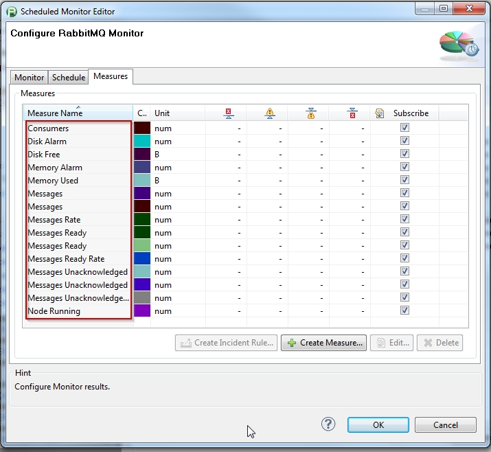
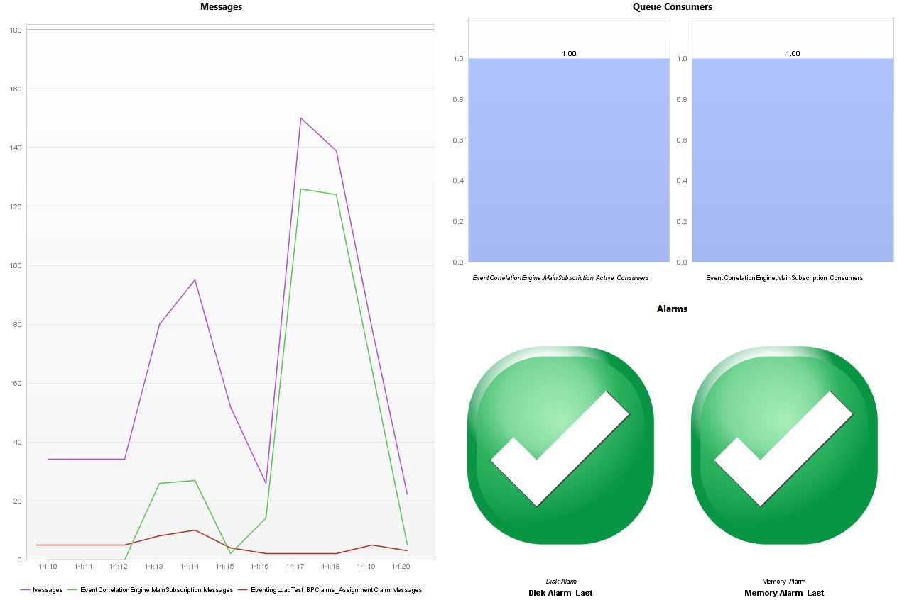
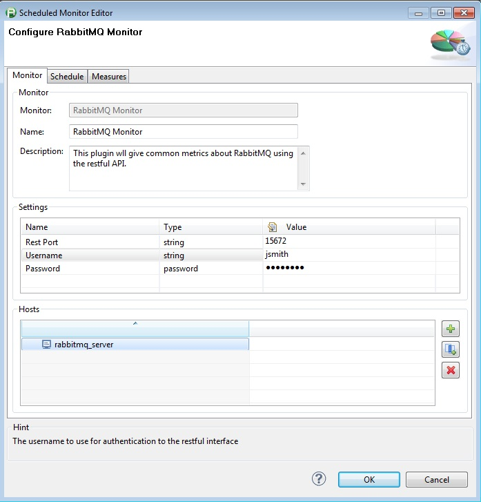
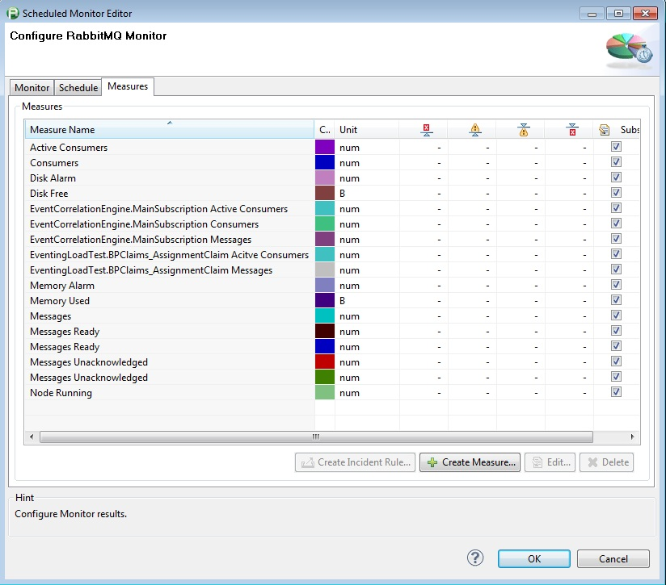
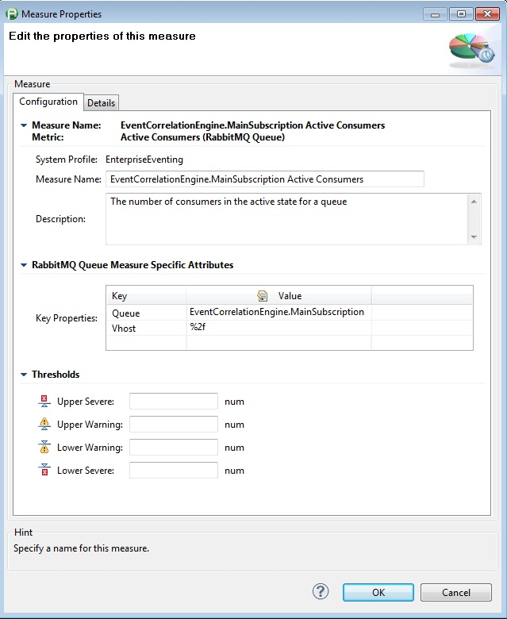
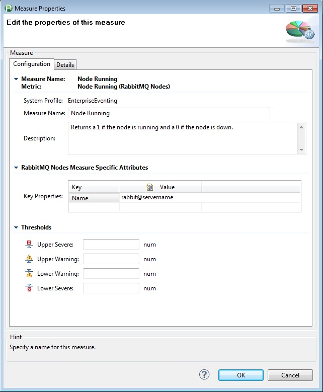

Rabbit MQ Monitor Plugin
Table of Contents (Start)
Rabbit MQ Monitor Plugin
Rabbit MQ Monitoring Plugin 1.2
 The monitor returns a number of values associated with RabbitMQ. The RabbitMQ Monitor makes 2 initial calls to the RabbitMQ rest interface which gets the overview and node information.
The monitor returns a number of values associated with RabbitMQ. The RabbitMQ Monitor makes 2 initial calls to the RabbitMQ rest interface which gets the overview and node information.
The plug-in then uses the JSon-simple library to parse the JSon script returned from the rest interface into an overview and nodes object. The overview object contains the values from the overview of the RabbitMQ Server. The Nodes object contains an array of Node objects. One Node object is created for each node returned in the JSon script. The Node is used to hold information about individual nodes.
Finally the monitor iterates through the measures and uses the correct objects to match each measure. If a Node measure is created the Node Name is a required field in the Measure configuration. This will tell the Nodes object which Node to pull the information from. If a Queue Measure is created the monitor will make an additional call to the RabbitMQ rest interface to retrieve data about the Queue specified in the measure configuration.
|
 |
 |
 |
|
 |
 |
 |
Plugin Details
|
Plug-In Versions |
Rabbit MQ Monitoring Plugin (compatible with dynaTrace 4.x) |
|
Author |
Derek Abing |
|
License |
|
|
Support |
Not Supported |
|
Known Problems |
|
|
Release History |
2012-04-18 Initial Release |
Provided Measures
|
Measure Name |
Description |
|
Active Consumers |
The number of consumers in the active state for a queue |
|
Consumers |
The number of consumers in a queue |
|
Disk Alarm |
Returns a 1 if the disk alarm has been tripped and a 0 if the disk alarm has not been tripped. |
|
Disk Free |
The amount of free bytes on the disk |
|
EventCorrelationEngine.MainSubscription Active Consumers |
The number of consumers in the active state for a queue |
|
EventCorrelationEngine.MainSubscription Consumers |
The number of consumers in a queue |
|
EventCorrelationEngine.MainSubscription Messages |
The total number of messages in a queue |
|
EventingLoadTest.BPClaims_AssignmentClaim Acitve Consumers |
The number of consumers in the active state for a queue |
|
EventingLoadTest.BPClaims_AssignmentClaim Messages |
The total number of messages in a queue |
|
Memory Alarm |
Returns a 1 if the memory alarm has been tripped and a 0 if the memory alarm has not been tripped. |
|
Memory Used |
The amount of bytes used by the Node |
|
Messages |
The total number of messages in the HornetQ instance. |
|
Messages Ready |
Total number of messages in the "Ready" state. |
|
Messages Unacknowledged |
The number of messages in the Unacknowledged state in the queue |
|
Node Running |
Returns a 1 if the node is running and a 0 if the node is down. |
Configuration
|
Name |
Value |
|
Rest Port |
Port on the server used by the restful interface. |
|
Username |
The username to use for authentication to the restful interface |
|
Password |
The password for the username used to authenticate to the restful interface. |
Installation
Import the Plugin into the dynaTrace Server. For details how to do this please refer to the dynaTrace documentation.